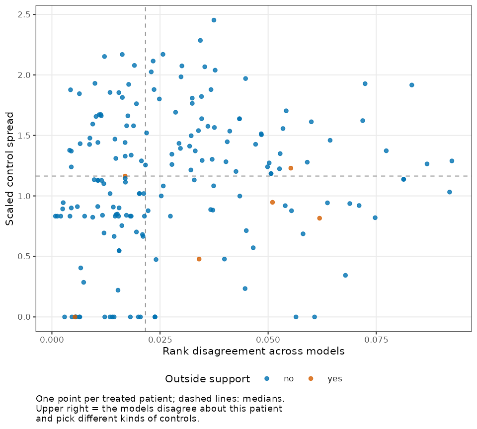
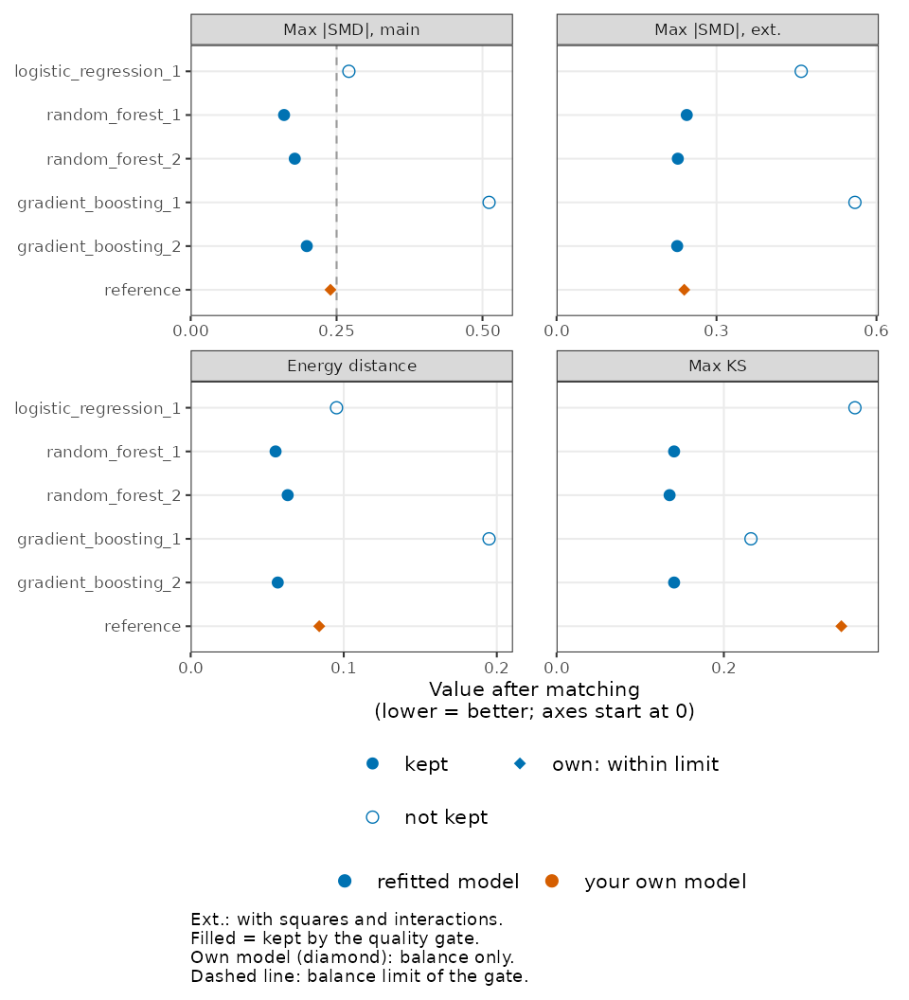
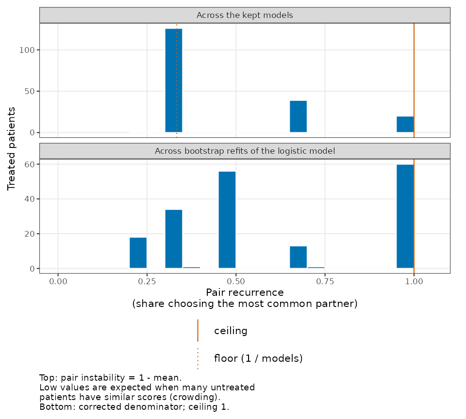

Why this check
A matched study estimates the propensity score with one model,
usually logistic regression. Another model that fits about as well, such
as Bayesian additive regression trees or a generalized random forest,
can rank the patients differently, give some treated patients different
untreated partners, and so change the matched design.
propsens describes how much the design depends on that
choice, without looking at outcomes, so it can be run
at the design stage, next to the usual balance table. Every summary
describes the study as a whole.
Status of the evidence. These diagnostics have been studied in the author’s simulations and benchmark analyses; a methods paper is in preparation. No peer-reviewed evaluation exists yet, and no thresholds for a “large” value exist yet. Report the output as a description of how much the matched design depends on the choice of propensity model, not as a validated check.
For a short overview, see propsens at a
glance (vignette("at-a-glance", package = "propsens")).
For the method explained one idea at a time with a real clinical
example, see How propsens works, step by
step
(vignette("how-it-works", package = "propsens")).
One call on your own matchit object
library(propsens)
data("lalonde", package = "MatchIt")
matched <- MatchIt::matchit(
treat ~ age + educ + race + married + nodegree + re74 + re75,
data = lalonde, method = "nearest", distance = "glm", link = "linear.logit",
replace = TRUE
)propensity_sensitivity() reads the formula and the
matching options from the object, refits the propensity model with
logistic regression, Bayesian additive regression trees (BART) and a
generalized random forest (GRF) (three seeds for each tree algorithm,
cross-fitted scores), re-matches with the same options, applies the
quality gate and computes the diagnostics, with 20 bootstrap refits of
the logistic model. These are the defaults, and the model set to use in
an analysis:
sensitivity <- propensity_sensitivity(matched)
sensitivityIt takes about a minute on these data, so the output below was
computed once with the script
data-raw/lalonde_default_output.R and is shown as text:
Propensity model sensitivity
WARNING: fewer than two models passed the quality gate, so there is no set of
similarly good models to compare. Every model is used below; read the values
as a description of all models, not of a kept set.
1. Quality gate: 7 of 7 models in use (3 algorithms: logistic regression,
BART, GRF); log-loss within 5 % of the best; relative balance rule: max
|SMD| main terms at most 0.10 above the best model's and at most 0.25
(limit here 0.25).
Fewer than two models passed, so every model is used. Failed:
logistic_regression_1: log-loss above (1 + quality_tolerance) x best; max
|SMD| main terms more than balance_margin above the best model's or
above balance_cap
bart_1: max |SMD| main terms more than balance_margin above the best
model's or above balance_cap
bart_2: max |SMD| main terms more than balance_margin above the best
model's or above balance_cap
bart_3: max |SMD| main terms more than balance_margin above the best
model's or above balance_cap
grf_probability_1: log-loss above (1 + quality_tolerance) x best; max
|SMD| main terms more than balance_margin above the best model's or
above balance_cap
grf_probability_2: log-loss above (1 + quality_tolerance) x best; max
|SMD| main terms more than balance_margin above the best model's or
above balance_cap
grf_probability_3: log-loss above (1 + quality_tolerance) x best; max
|SMD| main terms more than balance_margin above the best model's or
above balance_cap
Treated patients kept by each model: logistic_regression_1 100 %, bart_1
100 %, bart_2 100 %, bart_3 100 %, grf_probability_1 100 %,
grf_probability_2 100 %, grf_probability_3 100 %
2. Rank disagreement (primary; study mean over treated): 0.0493
Equal weight per algorithm (exploratory): 0.0665
Between/within-algorithm ratio (exploratory; median over treated): 10.1.
Disagreement between algorithms divided by disagreement between seeds of
the same algorithm; with three seeds per algorithm, seed noise alone
gives about 0.4.
Pair instability (exploratory; study mean over treated): 0.659 of a
possible 0.857 with 7 models. It is high whenever many untreated patients
have similar scores, even when the models agree.
Bootstrap rank instability of the logistic model (descriptive): 0.0462
3. Balance spread (descriptive; range of max |SMD| main terms over the models
in use): 0.297 (0.262 to 0.559)
Control spread (descriptive; mean scaled over treated): 1.24; 1 = the partners
chosen by different models differ as much as a typical matched pair (scale:
the matches of logistic_regression_1)
Your own model (glm, linear.logit): within the balance limit (judged on
balance only; it is not one of the compared models); mean absolute rank
difference from the models in use: 0.0903
Matching: 1:1 nearest neighbour on the logit, with replacement, order
"largest", caliper none; target: ATT.What this output says. On these data no refitted
model reaches the balance limit: every one of them has a largest
standardized mean difference above 0.25 after matching, so fewer than
two models pass the gate. The function raises an R warning and the
output opens with it: there is no set of similarly good models to
compare, and every number describes all seven models. Your own model
(the glm of the matchit object) is within the
balance limit, but it is judged on balance only and is an in-sample
score, while the refitted logistic regression is cross-fitted and judged
on both fit and balance; your own model is never one of the models
compared. When the gate keeps none of the refitted models, as here, the
next step is to revisit the matching design (covariates, caliper,
replacement), not to read the summaries.
The result also depends on seed.
seed_sensitivity() reruns the call with several seeds:
seed_sensitivity(matched, seeds = 1:3)Propensity model sensitivity over 3 values of `seed`
seed models_kept models_fitted algorithms_kept
1 7 7 3
2 2 7 1
3 3 7 1
kept_by_algorithm fallback rank_disagreement
logistic regression 1, BART 3, GRF 3 TRUE 0.04930
BART 2 FALSE 0.00618
BART 3 FALSE 0.00728
rank_disagreement_equal_weight pair_instability bootstrap_rank_instability
0.0665 0.659 0.0462
NA 0.346 0.0406
NA 0.438 0.0445
Range over the seeds:
summary minimum maximum
rank_disagreement 0.00618 0.0493
rank_disagreement_equal_weight 0.06650 0.0665
pair_instability 0.34600 0.6590
bootstrap_rank_instability 0.04060 0.0462
Some seeds fell back to every model or kept a single algorithm; their values
do not describe a set of similarly good models from several algorithms.
Report every row; the values depend on the seed as much as shown here.With seed = 1 every model is used (fallback); with seeds
2 and 3 the gate keeps only BART fits, so rank disagreement then
measures only BART’s seed noise (and the function warns). None of the
three seeds gives a kept set from two or more algorithms. Report every
row.
A simulated example where the gate keeps several algorithms
On lalonde none of the three seeds gave a kept set from two or more
algorithms. The data below are simulated with
simulate_example_data() (Scenario 1: six normal covariates,
a logistic treatment model, 1,000 patients), to show the output when the
gate keeps models from several algorithms. It was computed once with
data-raw/simulated_default_output.R:
simulated <- simulate_example_data(n = 1000, scenario = "S1", seed = 1)
propensity_sensitivity(treat ~ x1 + x2 + x3 + x4 + x5 + x6, data = simulated)Propensity model sensitivity
1. Quality gate: 7 of 7 models kept (3 algorithms: logistic regression, BART,
GRF); log-loss within 5 % of the best; relative balance rule: max |SMD|
main terms at most 0.10 above the best model's and at most 0.25 (limit here
0.247).
Treated patients kept by each kept model: logistic_regression_1 100 %,
bart_1 100 %, bart_2 100 %, bart_3 100 %, grf_probability_1 100 %,
grf_probability_2 100 %, grf_probability_3 100 %
2. Rank disagreement (primary; study mean over treated): 0.0588
Equal weight per algorithm (exploratory): 0.0678
Between/within-algorithm ratio (exploratory; median over treated): 4.12.
Disagreement between algorithms divided by disagreement between seeds of
the same algorithm; with three seeds per algorithm, seed noise alone
gives about 0.4.
Pair instability (exploratory; study mean over treated): 0.824 of a
possible 0.857 with 7 models. It is high whenever many untreated patients
have similar scores, even when the models agree.
Bootstrap rank instability of the logistic model (descriptive): 0.0534
3. Balance spread (descriptive; range of max |SMD| main terms over the kept
models): 0.0755 (0.147 to 0.223)
Control spread (descriptive; mean scaled over treated): 1.02; 1 = the partners
chosen by different models differ as much as a typical matched pair (scale:
the matches of logistic_regression_1)
Matching: 1:1 nearest neighbour on the logit, without replacement, order
"largest", caliper none; target: ATT.
seed_sensitivity(treat ~ x1 + x2 + x3 + x4 + x5 + x6, seeds = 1:3, data = simulated)Propensity model sensitivity over 3 values of `seed`
seed models_kept models_fitted algorithms_kept
1 7 7 3
2 6 7 3
3 7 7 3
kept_by_algorithm fallback rank_disagreement
logistic regression 1, BART 3, GRF 3 FALSE 0.0588
logistic regression 1, BART 3, GRF 2 FALSE 0.0579
logistic regression 1, BART 3, GRF 3 FALSE 0.0591
rank_disagreement_equal_weight pair_instability bootstrap_rank_instability
0.0678 0.824 0.0534
0.0676 0.800 0.0628
0.0684 0.830 0.0544
Range over the seeds:
summary minimum maximum
rank_disagreement 0.0579 0.0591
rank_disagreement_equal_weight 0.0676 0.0684
pair_instability 0.8000 0.8300
bootstrap_rank_instability 0.0534 0.0628
Report every row; the values depend on the seed as much as shown here.All three seeds keep models from three algorithms; every row is reported.
The printed lines, on a faster run
So that this vignette builds quickly, the runs below use the faster model set (logistic regression, random forests and gradient boosting), fewer seeds and fewer refits. The output has the same structure.
sensitivity <- propensity_sensitivity(
matched, algorithms = c("logistic_regression", "random_forest", "gradient_boosting"),
seeds = 1:2, n_trees = 100, bootstrap_samples = 5
)
sensitivity
#> Propensity model sensitivity
#> 1. Quality gate: 3 of 5 models kept (2 algorithms: random forest, gradient
#> boosting); log-loss within 5 % of the best; relative balance rule: max
#> |SMD| main terms at most 0.10 above the best model's and at most 0.25
#> (limit here 0.25).
#> Excluded:
#> logistic_regression_1: log-loss above (1 + quality_tolerance) x best; max
#> |SMD| main terms more than balance_margin above the best model's or
#> above balance_cap
#> gradient_boosting_1: max |SMD| main terms more than balance_margin above
#> the best model's or above balance_cap
#> Treated patients kept by each kept model: random_forest_1 100 %,
#> random_forest_2 100 %, gradient_boosting_2 100 %
#> 2. Rank disagreement (primary; study mean over treated): 0.0286
#> Equal weight per algorithm (exploratory): 0.0331
#> Between/within-algorithm ratio (exploratory; median over treated): 4.5
#> Pair instability (exploratory; study mean over treated): 0.524 of a
#> possible 0.667 with 3 models. It is high whenever many untreated patients
#> have similar scores, even when the models agree.
#> Bootstrap rank instability of the logistic model (descriptive): 0.0361
#> 3. Balance spread (descriptive; range of max |SMD| main terms over the kept
#> models): 0.0389 (0.16 to 0.199)
#> Control spread (descriptive; mean scaled over treated): 1.13; 1 = the partners
#> chosen by different models differ as much as a typical matched pair (scale:
#> the matches of logistic_regression_1)
#> Your own model (glm, linear.logit): within the balance limit (judged on
#> balance only; it is not one of the compared models); mean absolute rank
#> difference from the kept models: 0.104
#> Matching: 1:1 nearest neighbour on the logit, with replacement, order
#> "largest", caliper none; target: ATT.How to read the printed lines, in their order:
- WARNING (when present). Fewer than two models passed the gate: every model is used, and the values describe all models, not a kept set.
-
1. Quality gate. How many models were kept, from
how many algorithms, and the rule: a model is kept only if its
cross-fitted log-loss is within 5 % of the best model’s and its largest
standardized mean difference on main terms after matching is at most
0.10 above the best model’s and at most 0.25
(
balance_rule = "absolute"uses a fixed 0.10 instead). When the kept models are seeds of one algorithm, a block says so (and the function warns): the disagreement is then seed noise. The excluded models are listed with the reason, then the share of treated patients kept by each kept model (below 100 % only with a caliper). In this run the refitted logistic regression, the analyst’s usual kind of model, is not kept: another algorithm fitted or balanced clearly better here, and the summaries describe the kept models only. - 2. Rank disagreement (primary). For each patient, the standard deviation over the kept models of the patient’s percentile rank (0 to 1) of the propensity score; averaged over treated patients. 0 means every kept model orders the patients the same way. Read it for the study as a whole. It depends on how many seeds each kept algorithm has; the next line, equal weight per algorithm (exploratory), counts each algorithm once.
-
Between/within-algorithm ratio (exploratory).
Disagreement between algorithms divided by disagreement between seeds of
the same algorithm. With three seeds per algorithm, seed noise alone
gives a ratio of about 0.4; larger values point to disagreement between
algorithms beyond seed noise.
NAwhen no kept algorithm has two seeds. - Pair instability (exploratory). How often the kept models choose different untreated partners, with its maximum for the number of kept models. It is high whenever many untreated patients have similar scores, even when the models agree.
- Bootstrap rank instability (descriptive). The standard deviation of a patient’s percentile rank over bootstrap refits of the logistic model, averaged over treated patients: sampling noise of one model. Report it next to rank disagreement.
- 3. Balance spread (descriptive). The range of the largest standardized mean difference on main terms across the kept models.
- Control spread (descriptive). For each treated patient, how different the untreated partners chosen by the different models are, in units of a typical distance between a treated patient and its partner.
-
Your own model. The model of the
matchitobject, judged on balance only. - Matching. The matching settings and the target: with a caliper, the estimand is the effect in the retained treated patients.
summary() gives every study-level number for the kept
models and for every model, each with its label, the table of models and
the reasons each model was or was not kept:
summary(sensitivity)
#> Propensity model sensitivity: summary
#> 1. Quality gate: 3 of 5 models kept (2 algorithms: random forest, gradient
#> boosting); log-loss within 5 % of the best; relative balance rule: max
#> |SMD| main terms at most 0.10 above the best model's and at most 0.25
#> (limit here 0.25).
#> Excluded:
#> logistic_regression_1: log-loss above (1 + quality_tolerance) x best; max
#> |SMD| main terms more than balance_margin above the best model's or
#> above balance_cap
#> gradient_boosting_1: max |SMD| main terms more than balance_margin above
#> the best model's or above balance_cap
#> Treated patients kept by each kept model: random_forest_1 100 %,
#> random_forest_2 100 %, gradient_boosting_2 100 %
#> 2. Rank disagreement (primary; study mean over treated): 0.0286
#> Equal weight per algorithm (exploratory): 0.0331
#> Between/within-algorithm ratio (exploratory; median over treated): 4.5
#> Pair instability (exploratory; study mean over treated): 0.524 of a
#> possible 0.667 with 3 models. It is high whenever many untreated patients
#> have similar scores, even when the models agree.
#> Bootstrap rank instability of the logistic model (descriptive): 0.0361
#> 3. Balance spread (descriptive; range of max |SMD| main terms over the kept
#> models): 0.0389 (0.16 to 0.199)
#> Control spread (descriptive; mean scaled over treated): 1.13; 1 = the partners
#> chosen by different models differ as much as a typical matched pair (scale:
#> the matches of logistic_regression_1)
#> Your own model (glm, linear.logit): within the balance limit (judged on
#> balance only; it is not one of the compared models); mean absolute rank
#> difference from the kept models: 0.104
#> Matching: 1:1 nearest neighbour on the logit, with replacement, order
#> "largest", caliper none; target: ATT.
#>
#> Study-level numbers (kept models / every model):
#> quantity label kept_models
#> number_of_models_used count 3
#> mean_rank_disagreement_treated primary 0.0286
#> mean_rank_disagreement_equal_weight_treated exploratory 0.0331
#> mean_rank_disagreement_all descriptive 0.0445
#> median_between_within_ratio_treated exploratory 4.5
#> mean_logit_disagreement_treated descriptive 0.448
#> mean_control_spread_scaled_treated descriptive 1.13
#> p90_control_spread_scaled_treated descriptive 1.88
#> smd_max_main_range descriptive 0.0389
#> smd_max_main_sd descriptive 0.0195
#> smd_max_extended_range descriptive 0.018
#> smd_max_extended_sd descriptive 0.01
#> energy_distance_range descriptive 0.00792
#> energy_distance_sd descriptive 0.00422
#> ks_max_range descriptive 0.00541
#> ks_max_sd descriptive 0.00312
#> pair_recurrence_models_mean_treated descriptive 0.476
#> pair_instability_models_mean_treated exploratory 0.524
#> pair_recurrence_bootstrap_mean_treated descriptive 0.62
#> treated_kept_share descriptive 1
#> treated_kept_share_min descriptive 1
#> bootstrap_rank_instability_treated descriptive 0.0361
#> reference_mean_absolute_rank_difference_treated descriptive 0.104
#> every_model
#> 5
#> 0.0575
#> 0.0692
#> 0.0675
#> 7.81
#> 0.634
#> 1.22
#> 1.7
#> 0.351
#> 0.145
#> 0.333
#> 0.156
#> 0.139
#> 0.0591
#> 0.222
#> 0.096
#> 0.328
#> 0.672
#> 0.62
#> 1
#> 1
#> 0.0361
#> 0.0886
#>
#> Models (in_use = kept by the quality gate; for your own model, the row
#> `reference`, passed_quality_gate means within the balance limit):
#> model_id algorithm logloss smd_max_main
#> logistic_regression_1 logistic_regression 0.412 0.271
#> random_forest_1 random_forest 0.363 0.160
#> random_forest_2 random_forest 0.360 0.178
#> gradient_boosting_1 gradient_boosting 0.351 0.511
#> gradient_boosting_2 gradient_boosting 0.351 0.199
#> reference reference (glm, linear.logit) NA 0.239
#> smd_max_extended energy_distance ks_max treated_kept passed_quality_gate
#> 0.459 0.0953 0.357 1 FALSE
#> 0.244 0.0555 0.141 1 TRUE
#> 0.227 0.0634 0.135 1 TRUE
#> 0.560 0.1950 0.232 1 FALSE
#> 0.226 0.0569 0.141 1 TRUE
#> 0.239 0.0840 0.341 1 TRUE
#> in_use
#> FALSE
#> TRUE
#> TRUE
#> FALSE
#> TRUE
#> FALSE
#>
#> Gate notes:
#> logistic_regression_1: log-loss above (1 + quality_tolerance) x best; max
#> |SMD| main terms more than balance_margin above the best model's or
#> above balance_cap
#> random_forest_1: passed
#> random_forest_2: passed
#> gradient_boosting_1: max |SMD| main terms more than balance_margin above the
#> best model's or above balance_cap
#> gradient_boosting_2: passed
#> reference: your own model: an in-sample score from the matchit object, so
#> its log-loss is not comparable and not computed; judged on balance only:
#> within the balance limit; never one of the compared models
#>
#> Quality gate: log-loss within 5 % of the best; relative balance rule: max
#> |SMD| main terms at most 0.10 above the best model's and at most 0.25
#> (limit here 0.25).
#> Matching: 1:1 nearest neighbour on the logit, with replacement, order
#> "largest", caliper none; target: ATT.The per-patient table is available with as.data.frame().
Its columns describe how the disagreement is spread over the patients;
they are not flags for individual patients.
head(as.data.frame(sensitivity))
#> id treated rank_disagreement rank_disagreement_between
#> 1 NSW1 1 0.009951304 0.002303279
#> 2 NSW2 1 0.035346147 0.043186489
#> 3 NSW3 1 0.021240391 0.024760254
#> 4 NSW4 1 0.002617712 0.002015369
#> 5 NSW5 1 0.019549628 0.022744884
#> 6 NSW6 1 0.014620231 0.017562506
#> rank_disagreement_within logit_disagreement control_spread
#> 1 0.013819677 0.1523580 4.987492
#> 2 0.003454919 0.1689781 5.341489
#> 3 0.009213118 0.7281597 2.634231
#> 4 0.002879099 1.5019469 2.439757
#> 5 0.008637298 0.2889737 1.814653
#> 6 0.004030739 0.4403734 2.151607
#> control_spread_scaled pair_recurrence_models pair_recurrence_bootstrap
#> 1 1.9302110 0.3333333 0.3333333
#> 2 2.0672113 0.6666667 1.0000000
#> 3 1.0194744 0.6666667 0.2500000
#> 4 0.9442110 0.6666667 1.0000000
#> 5 0.7022896 0.3333333 0.3333333
#> 6 0.8326943 0.6666667 0.2500000
#> outside_support logistic_score
#> 1 FALSE 0.3950590
#> 2 FALSE -1.3019135
#> 3 FALSE 0.5733472
#> 4 FALSE 1.2414886
#> 5 FALSE 0.8807265
#> 6 FALSE 0.9013876The three plots
Patients. One point per treated patient: rank disagreement across the kept models (x) against the scaled control spread (y). It describes how the disagreement is spread over the treated patients; individual points should not be read as flags for individual patients. Colour shows whether the patient’s logistic score lies outside the range of the untreated patients’ scores.
plot(sensitivity, type = "patients")
Models. The four balance statistics after matching, one panel each, one row per model, each axis starting at 0. Filled points are kept by the quality gate, hollow points are not; your own model is drawn in its own colour. The dashed line is the balance limit of the gate.
plot(sensitivity, type = "models")
Recurrence. The pair recurrence: the share of kept models (or bootstrap refits) that choose a treated patient’s most common untreated partner. One minus its mean over treated patients across the kept models is pair instability (exploratory). Low recurrence is expected when untreated patients are dense, even when the models agree.
plot(sensitivity, type = "recurrence")
Without a matchit object
The same diagnostic runs on a formula and a data frame; the matching options are then arguments (without replacement, order “largest”, no caliper by default):
propensity_sensitivity(treat ~ age + educ + race + married + nodegree + re74 + re75,
data = lalonde)What to do with the result
- If a warning appears, revisit the matching design first.
- Rerun with two or three values of
seed(seed_sensitivity()) and report every row. - Show the models plot next to your balance table, and choose the design by balance, never by the outcome.
- Decide before looking at outcomes whether you will report the effect estimate under each kept model, and then report all of them.
The check does not detect unmeasured confounding and is not a fix: it describes how much your matched design depends on one modelling choice. A small value is not evidence that the estimate is unbiased.